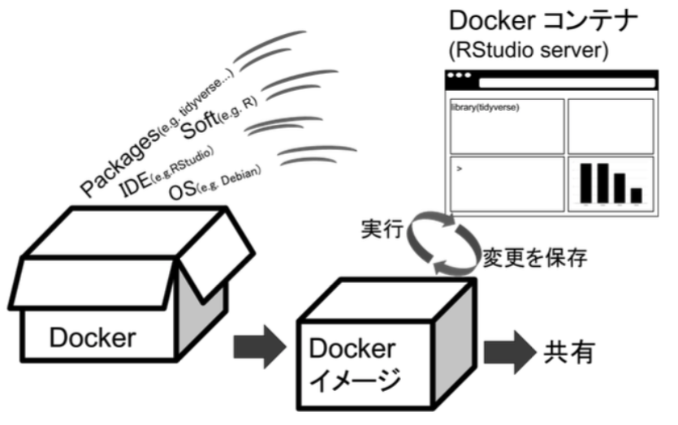

2 事前準備（Dockerとは）
2.1 解析環境の違うと結果が再現しない？
コンピュータが計算するものは正しそうに見えますが，Rを含む統計ソフトが返す結果がいつでも一致するとは限りません。例えば，コンピュータのOSの種類，統計解析ソフトのバージョン，Rの場合はパッケージのバージョンによって出力される結果は異なることがあります。最近は，データや解析コードの公開が進んできています。しかし，このような統計解析を実行する環境の違いが，再現性を低めている可能性もあります。
2.2 Dockerでコードだけでなく解析環境の再現性も保つ
解析環境の再現性のために，データやコードを公開・共有するだけでなく，解析環境やバージョン情報も公開する必要があります。ただ，なかなか公開するだけだと，論文作成時と同じ解析環境を作るのは難しかったりします。例えば，古いOSで動作するソフトじゃないと解析が再現できない場合，そのOSやソフトを用意するのは難しいかもしれません（実際，研究でつかわれたプログラムが公開されていたが，現在使われているOSでは動作せず，かといって古いOSを用意することも不可能なことがありました）。
OSとソフト（Rの場合はパッケージも）をまとめて配布できると解析環境の再現性が担保できるかもしれません。WindowsやMacの場合は難しいですが，Linux上で動作するようなソフトの場合は，OSとソフトを含んだものをまとめて（まとめたものをコンテナといいます），配布することもできます。このような，OSに依存せずに，Linuxベースのアプリケーションをコンテナ化する技術をDockerと呼びます。以下の図のように，Dockerを使うとOSとソフトをまとめたコンテナをイメージとして配布可能になります。配布が可能ということは，統計解析環境の共有も可能になります。そして，Docker Hub(https://hub.docker.com/ )では，多数のイメージが公開されています。ご自身の関心に合わせて，便利なDockerイメージをご利用いただけます。

2.3 Rocker: RとRstudio用のDocker
今回の場合は，OS(Ubuntsと呼ばれるLinux)とソフト（RとIDEのRStudio）とRパッケージをまとめたコンテナを使います。自作もできますが，結構大変ですので，既に公開されているものを使います。RやRstudio用のDockerコンテナをつくるRockerプロジェクト(https://hub.docker.com/u/rocker)1が公開したイメージが便利なので，今回のTWSでも使用します。
Rockerプロジェクトでも十分なのですが，よく使うパッケージなどは事前に入れられていると便利です。特にベイズ統計で用いるRstanなどはインストールがちょっと面倒なので，事前にそれらが入っていると便利かと思います（特にMarkdownでのPDF出力まわりやRStanなどが事前に入っていると便利です）。そこで，私は心理学で使いそうなRでパッケージを，RockerプロジェクトのVerseというコンテナにたくさん追加した自作Dockerイメージ(ykunisato/paper-r)を作って公開しています(https://hub.docker.com/u/ykunisato)。今回のTWSでは，私が作成したpaper-rというDockerイメージを使います。
2.4 統計解析でDockerを導入する利点
最後に，Dockerを導入する利点を以下に挙げておきます。
- 統計解析環境を再現可能にできる（使ったDockerイメージを配布すればいいだけ）
- 最初にDockerさえインストールできれば，あとはコマンド１つで，簡単に面倒なソフトのインストールなどが終わる
- プラウザで作業ができるので，今どきの仕事スタイルにあっている
- かっこいい
- (マニア向け)もしサーバー上にDockerを導入すれば，簡単に自分のサーバーでサービスを稼働できる（iPadからブラウザを通してRstudioが使える！）。
Nüst, D., Eddelbuettel, D., Bennett, D., Cannoodt, R., Clark, D., Daróczi, G., Edmondson, M., Fay, C., Hughes, E., Kjeldgaard, L., Lopp, S., Marwick, B., Nolis, H., Nolis, J., Ooi, H., Ram, K., Ross, N., Shepherd, L., Sólymos, P., … Xiao, N. (2020). The Rockerverse: Packages and Applications for Containerisation with R. The R Journal, 12(1), 437.↩︎